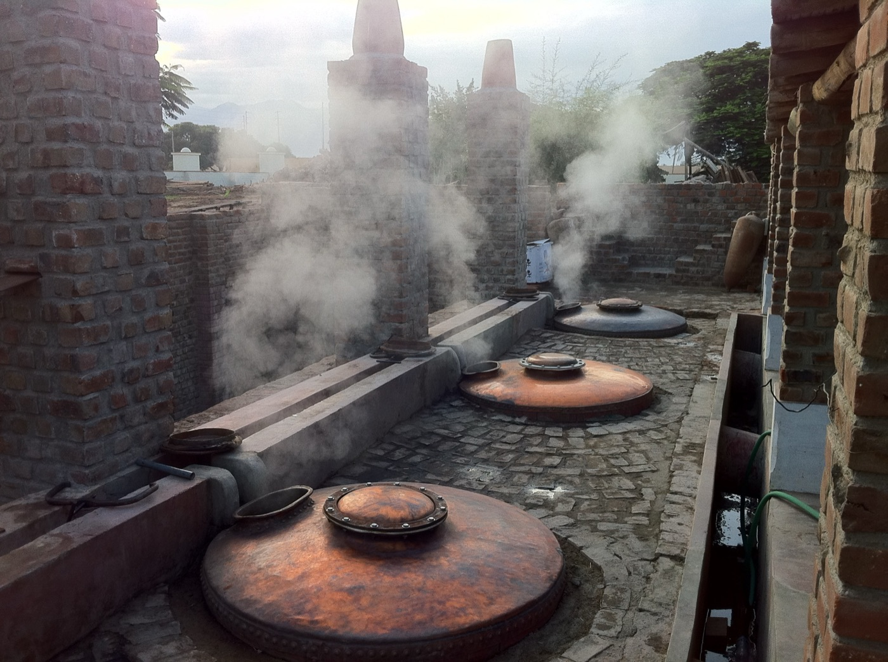
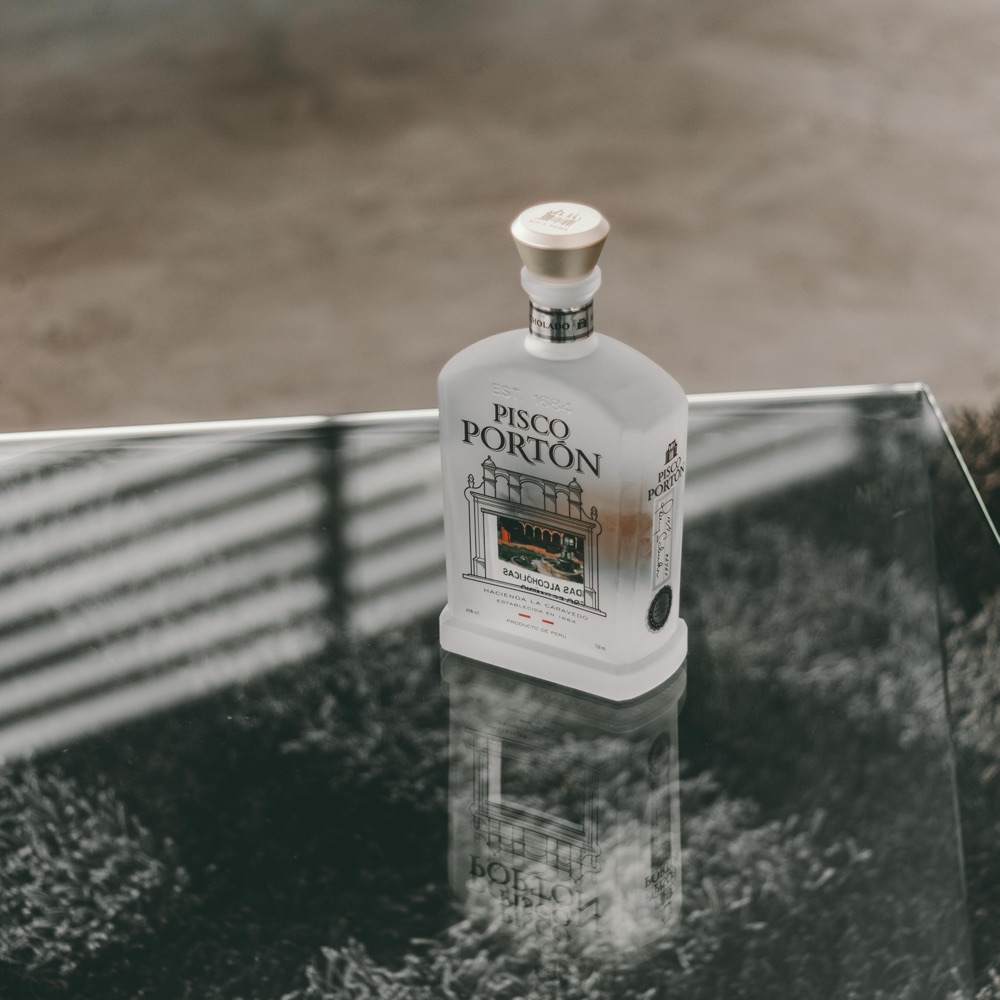
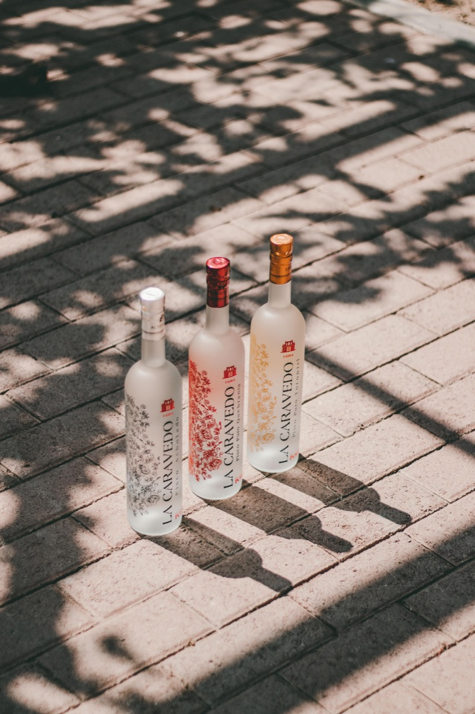
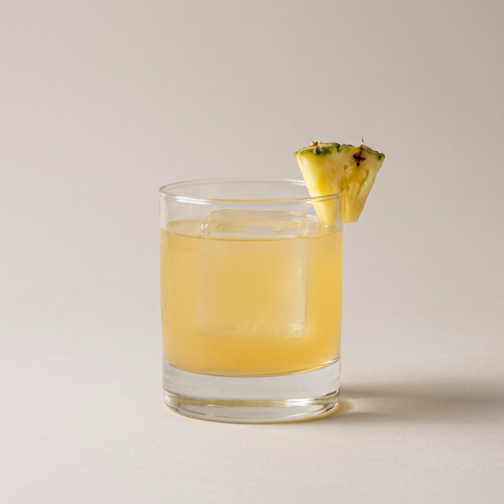
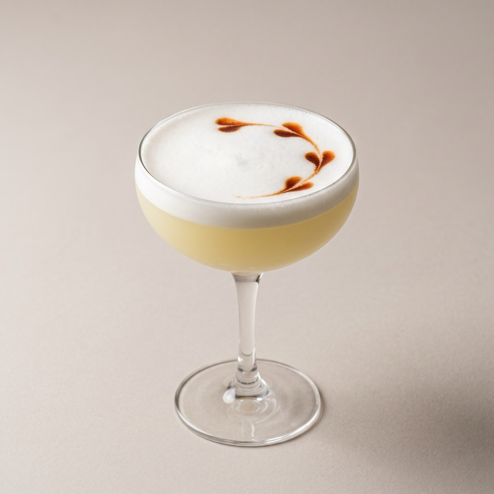
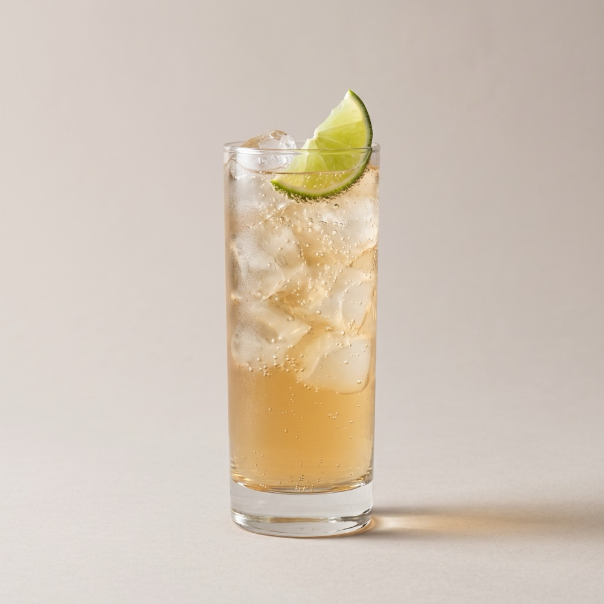
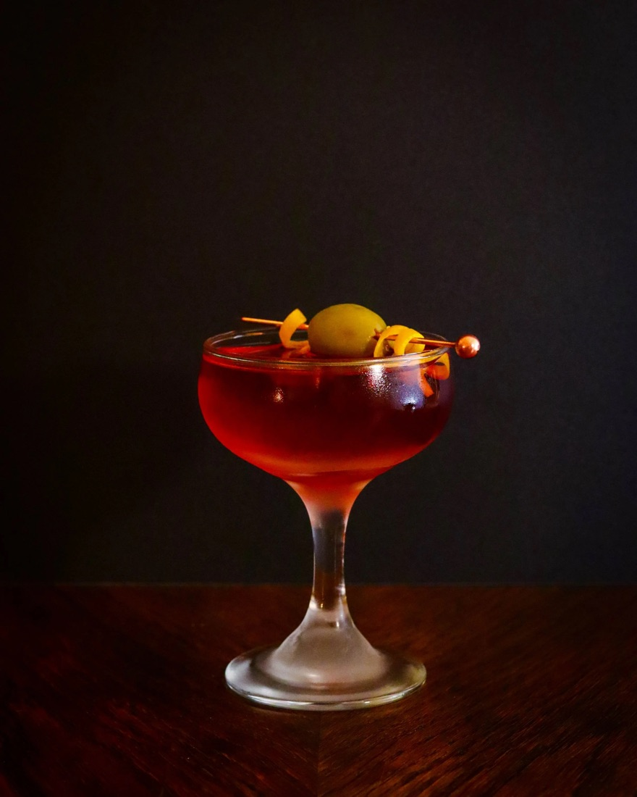

01Basics
什麼是 Pisco？What is Pisco?
Pisco 是秘魯與智利的葡萄白蘭地，也是調酒師最值得認識的南美烈酒。Pisco is the grape brandy of Peru and Chile — a South American spirit every bartender should know.

- 原料Made from
- 葡萄（先釀成葡萄酒再蒸餾）Grapes — fermented, then distilled
- 產地Origin
- 秘魯、智利Peru and Chile
- 名稱由來Name
- 秘魯南部的 Pisco 港The port of Pisco in southern Peru
- 外觀Look
- 透明無色（秘魯 Pisco 不進橡木桶）Crystal-clear — Peruvian Pisco never touches oak
16 世紀，西班牙人把葡萄藤帶到南美洲。當地人開始用葡萄酒蒸餾烈酒，再從 Pisco 港運往各地，「Pisco」這個名字就這樣流傳下來。
Spanish settlers brought vines to South America in the 16th century. Locals began distilling wine into spirit and shipping it from the port of Pisco — and the name stuck.
為什麼適合調酒？Why bartenders love it
秘魯 Pisco 不進橡木桶，保留了葡萄本身的花香與果香，酒色透明，很容易和各種風味搭配。
With no oak, Peruvian Pisco keeps the grape’s floral and fruity character, stays clear, and pairs easily with all kinds of flavours.
02Rules
秘魯 Pisco 的規範Rules for Peruvian Pisco
秘魯 Pisco 受原產地名稱保護，從產區、蒸餾到裝瓶都有嚴格規定。Peruvian Pisco is protected by a Denomination of Origin, with strict rules from region to bottling.

- 1產區限定Set regions
Lima、Ica、Arequipa、Moquegua 與 Tacna 的部分河谷Lima, Ica, Arequipa, Moquegua and parts of Tacna
- 2只蒸餾一次Single distillation
直接蒸餾到裝瓶酒精度，不能加水稀釋Distilled straight to bottling proof — no water added
- 3不添加任何東西Nothing added
不加水、糖、色素或香料No water, sugar, colouring or flavouring
- 4不接觸木桶No wood
至少靜置 3 個月，只能用不鏽鋼、玻璃等不影響風味的容器Rests at least 3 months in inert vessels like steel or glass
- 58 種指定葡萄8 permitted grapes
只能使用規定的 8 個葡萄品種Only the 8 permitted grape varieties may be used
換句話說，每一瓶秘魯 Pisco 都是「一次蒸餾、原汁原味」，一瓶酒需要用到大量葡萄。
In short, every bottle of Peruvian Pisco is a single, pure distillate — and it takes a lot of grapes to make one.
03Styles
Pisco 的分類How Pisco Is Classified
Pisco 可以從兩個角度來分類：發酵程度，以及使用的葡萄。
Pisco can be classified in two ways: by fermentation and by grapes used.


左：Pisco Portón（Mosto Verde） 右：Pisco La Caravedo（Puro）Left: Pisco Portón (Mosto Verde) · Right: Pisco La Caravedo (Puro)
依發酵程度By fermentation
完全發酵Fully fermented
葡萄汁完全發酵、糖分都轉成酒精後才蒸餾。風味乾淨俐落，充分展現葡萄本身的個性，是最經典的 Pisco。
Distilled after the grape must has fully fermented and all sugar has become alcohol. Clean and precise, showing the grape’s true character — the classic Pisco.
半發酵Semi-fermented
在葡萄汁發酵到一半、還保有部分糖分時就蒸餾，口感更圓潤絲滑、香氣更豐富。需要更多葡萄，通常是最高級的類型。
Distilled halfway through fermentation while some sugar remains, giving a rounder, silkier texture and richer aroma. Needs more grapes; usually the premium style.
依使用的葡萄By grapes used
多品種混釀Blend
混合兩種以上的葡萄，兼具結構與香氣，平衡好用，是吧台上很萬用的選擇。若單一葡萄品種，則直接標示葡萄名稱。
提醒：Puro 和 Mosto Verde 都可以做成 Acholado。
A blend of two or more varieties, balancing body and aroma — a versatile workhorse behind the bar. If made from a single grape, the label simply shows the grape’s name.
Note: both Puro and Mosto Verde can be made as an Acholado.
04Grapes
八種葡萄品種The Eight Grapes
秘魯 Pisco 的葡萄分成兩大類：非芳香型（風味較內斂、結構紮實）與芳香型（花香果香明顯）。
Grapes fall into two families: non-aromatic (restrained, structured) and aromatic (floral, fruity).
風味內斂、結構紮實，是 Pisco 的骨架Restrained and structured — the backbone of Pisco
- Quebranta秘魯最具代表性的品種，結構紮實，帶有青香蕉、堅果與泥土調性Peru’s signature grape; firm body, green banana, nutty and earthy notes
- Negra Criolla風味柔和，帶乾燥果實與葡萄乾感Soft, with dried-fruit and raisin notes
- Mollar果香清淡，口感圓潤Light fruit, round palate
- Uvina產量稀少，帶草本與橄欖般的鹹香調性Rare; herbal, olive-like savoury notes
花香、果香明顯，香氣奔放Floral and fruity, with expressive aromas
- Italia花香明亮，帶葡萄柚、柑橘與白花香氣Bright and floral; grapefruit, citrus, white flowers
- Torontel香氣最濃郁的品種之一，帶熱帶水果與花香One of the most perfumed; tropical fruit and blossoms
- Moscatel麝香葡萄香、蜂蜜與橙花Muscat grape, honey, orange blossom
- Albilla香氣細緻，帶青蘋果與柑橘皮Delicate; green apple and citrus peel
05Peru vs. Chile
秘魯 Pisco vs. 智利 PiscoPeruvian vs. Chilean Pisco
同樣叫 Pisco，秘魯與智利的規範卻大不相同。Both are called Pisco, but the rules in Peru and Chile are very different.
| 秘魯Peru | 智利Chile | |
|---|---|---|
| 蒸餾Distillation | 只蒸餾一次，直接到裝瓶酒精度Single, straight to proof | 可多次蒸餾Multiple allowed |
| 加水Water | 不可Not allowed | 可加水調整酒精度Allowed |
| 木桶Wood | 不可Not allowed | 可以木桶陳年Ageing in wood allowed |
| 葡萄Grapes | 規定的 8 個品種8 permitted varieties | 以麝香（Muscat）家族為主Mainly Muscat family |
| 產區Region | Lima, Ica, Arequipa, Moquegua, Tacna | Atacama, Coquimbo |
06Classics
經典 Pisco 調酒Classic Pisco Cocktails
認識 Pisco 必學的四杯經典調酒，從歷史最悠久的 Pisco Punch 開始。Four classics every Pisco lover should know — starting with the historic Pisco Punch.

Pisco Punch
Pisco Punch（Pisco 賓治）被視為史上第一杯 Pisco 調酒，口感清爽、帶有熱帶果香。
The Pisco Punch is regarded as the first Pisco cocktail — bright, with a tropical fruit lift.
- 1850 年代1850s加州淘金熱，Pisco 隨商船從秘魯運到舊金山，成為當地最受歡迎的烈酒之一。During the Gold Rush, Pisco arrives in San Francisco by ship and becomes a local favourite.
- 19 世紀末Late 1800s舊金山 Bank Exchange 酒吧的 Pisco Punch 在老闆 Duncan Nicol 手上風靡全城，據說作家吉卜林也曾撰文讚美。At San Francisco’s Bank Exchange, owner Duncan Nicol makes the Pisco Punch the toast of the town — Rudyard Kipling is said to have praised it.
- 1920 年1920美國禁酒令實施，酒吧關門，Nicol 一直保密的原始配方跟著失傳。Prohibition closes the bar, and Nicol’s secret recipe is lost.
- 今天Today依 Nicol 的員工 John Lannes 留下的描述重建：Pisco、鳳梨糖漿與新鮮檸檬汁。Rebuilt from the account of Nicol’s employee John Lannes: Pisco, pineapple syrup and fresh lemon.
材料Ingredients
- Pisco60ml
- 鳳梨糖漿Pineapple syrup25ml
- 新鮮檸檬汁Fresh lemon juice20ml
做法Method
- 所有材料加冰搖盪 10–12 秒Shake all ingredients with ice for 10–12 seconds
- 濾入放有大冰塊的威士忌杯Strain into a rocks glass over a large ice cube
- 在杯緣放上鳳梨塊裝飾Garnish with a pineapple chunk on the rim

Pisco Sour
秘魯的國民調酒，1920 年代誕生於利馬的 Morris' Bar。秘魯每年 2 月的第一個星期六是「Pisco Sour 日」。
Peru’s national cocktail, born at Morris’ Bar in Lima in the 1920s. Peru celebrates Pisco Sour Day on the first Saturday of February.
材料Ingredients
- Pisco60ml
- 新鮮萊姆汁Fresh lime juice30ml
- 糖漿 1:1Simple syrup 1:120ml
- 蛋白Egg white1 顆1
- 安格仕苦精Angostura bitters3 滴3 drops
做法Method
- 苦精以外的材料倒入雪克杯，不加冰先乾搖 10 秒，把蛋白打發Dry shake everything except the bitters for 10 seconds to whip the egg white
- 加冰再搖盪 12 秒Add ice and shake again for 12 seconds
- 雙重過濾倒入冰鎮的淺碟杯Double strain into a chilled coupe
- 在泡沫上滴 3 滴苦精點綴Finish with 3 drops of bitters on the foam

Chilcano
秘魯人最日常的 Pisco Buck，清爽好喝。
Peru’s everyday Pisco Buck — light and refreshing.
材料Ingredients
- Pisco50ml
- 新鮮萊姆汁Fresh lime juice15ml
- 薑汁汽水Ginger ale120ml
- 安格仕苦精Angostura bitters2 dash
做法Method
- 高球杯裝滿冰塊Fill a highball glass with ice
- 倒入 Pisco 與萊姆汁Add the Pisco and lime juice
- 補滿薑汁汽水，輕輕攪拌一圈Top with ginger ale and stir gently once
- 滴上苦精，在杯緣放綠檸檬角Dash the bitters and garnish with a lime wedge

El Capitán
Pisco 與甜香艾酒攪拌而成，像是秘魯版的曼哈頓。據說誕生於 20 世紀初的秘魯南部高原，駐守當地的上尉們用它來暖身，因此得名「El Capitán（上尉）」。
Pisco stirred with sweet vermouth — Peru’s answer to the Manhattan. Legend has it that it was born in the southern Andean highlands in the early 1900s, where army captains drank it to keep warm — hence “El Capitán”.
材料Ingredients
- Pisco45ml
- 甜香艾酒Sweet vermouth45ml
- 安格仕苦精Angostura bitters1 dash
做法Method
- 所有材料倒入攪拌杯，加冰Add all ingredients to a mixing glass with ice
- 攪拌 20–30 秒至充分冰鎮Stir for 20–30 seconds until well chilled
- 濾入冰鎮的香檳碗形杯Strain into a chilled champagne saucer
- 以酒籤串一顆橄欖裝飾Garnish with an olive on a pick
07Bar Tips
吧台使用建議Tips Behind the Bar
依照調酒的風格，挑選適合的 Pisco 類型與葡萄品種。Match the Pisco style and grape to the drink you are making.
酸酒類（Sour）Sours
推薦Try Quebranta、AcholadoQuebranta, Acholado
結構夠，能撐住酸甜與蛋白。Enough backbone to carry citrus, sugar and egg white.
高球與氣泡類Highballs & sparkling
推薦Try Italia、TorontelItalia, Torontel
芳香型品種，香氣在氣泡中最能展現。Aromatic grapes that shine with bubbles.
攪拌類、純飲Stirred & neat
推薦Try Mosto VerdeMosto Verde
口感圓潤，適合 Capitán 這類以酒為主的調酒，或常溫純飲。Silky texture for spirit-forward drinks like the Capitán, or sipping neat.
08Our Brands
品牌介紹Our Brands
Pisco Portón 與 Pisco La Caravedo，都來自 1684 年創立的 Hacienda La Caravedo 酒莊。Pisco Portón and Pisco La Caravedo both come from Hacienda La Caravedo, founded in 1684.